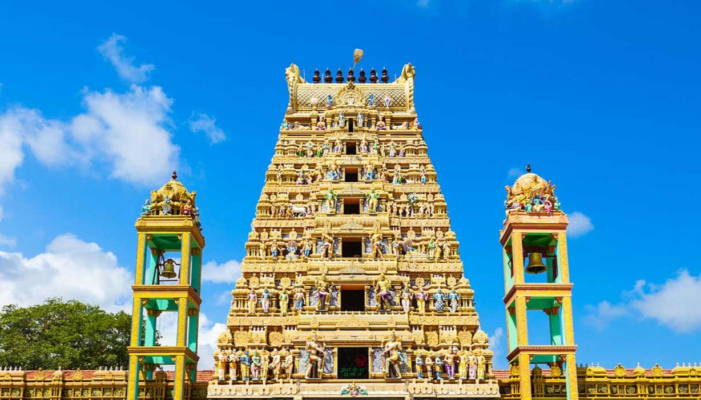

Koneswaram Temple – Trincomalee

Ancient Hindu temple dedicated to Lord Shiva
Located on Swami Rock with breathtaking ocean views
One of the Pancha Ishwarams (five sacred Shiva temples)
Munneswaram Temple – Chilaw

Important temple dedicated to Lord Shiva
Visited by both Hindus and Buddhists
Known for the Munneswaram annual festival